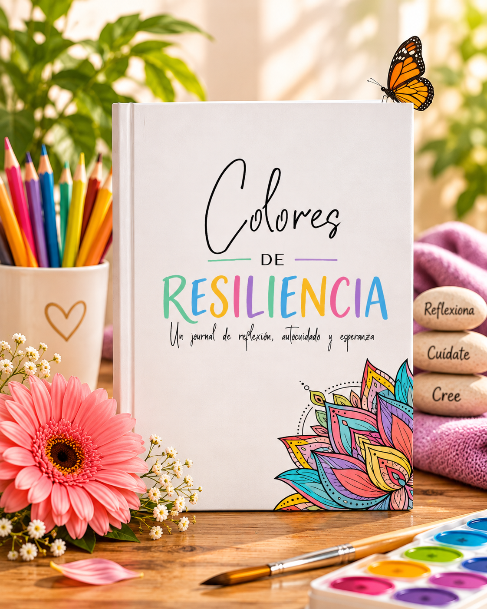

Historias que inspiran
Experiencias reales de personas que han encontrado nuevas formas de afrontar sus desafíos.
UN ESPACIO PARA COMPARTIR Y CRECER
Positivas en Positivo nace para dar voz a las experiencias, compartir historias y construir un espacio de encuentro, expresión y resiliencia.
Conoce nuestra historiaNUESTRA HISTORIA
Positivas en Positivo nace de la necesidad de compartir, escuchar y reconocer el valor de cada experiencia de vida.
Creemos en el poder de las palabras, la expresión creativa y el acompañamiento. Queremos construir una comunidad donde cada persona pueda sentirse escuchada, representada y libre de compartir su historia.
A través de nuestros journals y de las experiencias de nuestra comunidad, buscamos abrir espacios para la reflexión, el autocuidado y la resiliencia.
NUESTRA COMUNIDAD
Detrás de cada historia hay una experiencia única. Compartir nuestras vivencias puede abrir caminos, generar empatía y recordarnos que no estamos solos.
Experiencias reales de personas que han encontrado nuevas formas de afrontar sus desafíos.
Palabras, emociones y reflexiones compartidas desde el respeto y la libertad de cada persona.
Un lugar donde escuchar, aprender y reconocer el valor de nuestras experiencias.
NUESTROS JOURNALS
Creamos herramientas para acompañar la reflexión, la expresión personal y el descubrimiento de nuevas formas de mirar la vida.

BIENESTAR Y AMOR PROPIO
Un espacio personal para reconocer tus emociones, fortalecer el amor propio, reflexionar sobre tus experiencias y celebrar cada pequeño avance.
Conoce el journal
EXPRESIÓN Y RESILIENCIA
Una invitación a expresar tus emociones mediante el color, la creatividad y la escritura, reconociendo tus experiencias y tu propia capacidad de resiliencia.
Conoce el journalSIGAMOS CONECTADOS
Queremos seguir compartiendo experiencias, reflexiones e iniciativas que nos permitan crecer y acompañarnos. Te invitamos a encontrarnos en nuestras redes sociales y a formar parte de nuestra comunidad.
¿Quieres formar parte de nuestra comunidad?
Regístrate aquí